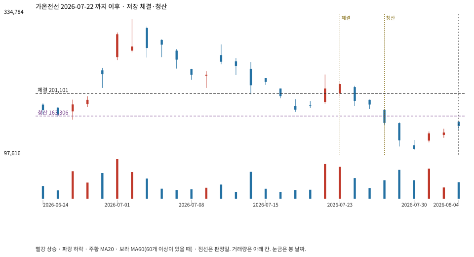

계좌를 다시 돌리지 않았다. 아래는 저장된 주문·체결·청산·비용·손익이다.

{
"case_id": "fdfe720a271b1684",
"status": "closed",
"trade": {
"symbol": "000500.KS",
"signal_date": "2026-07-22",
"quantity": 23,
"entry": 209500,
"stop": 163388,
"target": 326000,
"planned_risk": 1071029.5070379993,
"reserved_cash": 4823318.499999999,
"fill": {
"date": "2026-07-23",
"price": 201100.5,
"fee": 4625.3115
},
"exit": {
"date": "2026-07-28",
"price": 163306.306,
"reason": "stop",
"net_pnl": -877647.8185379999,
"ambiguous_bar": false
}
},
"cost": "research fee 10bp each side, slippage 5bp; amounts below are the stored ledger, not a new run",
"chart": "c\/fdfe720a271b1684.svg"
}